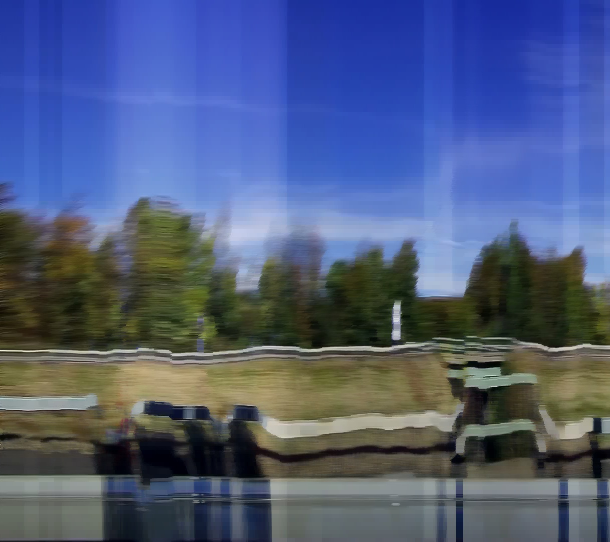
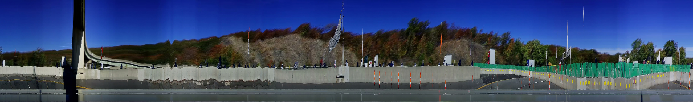
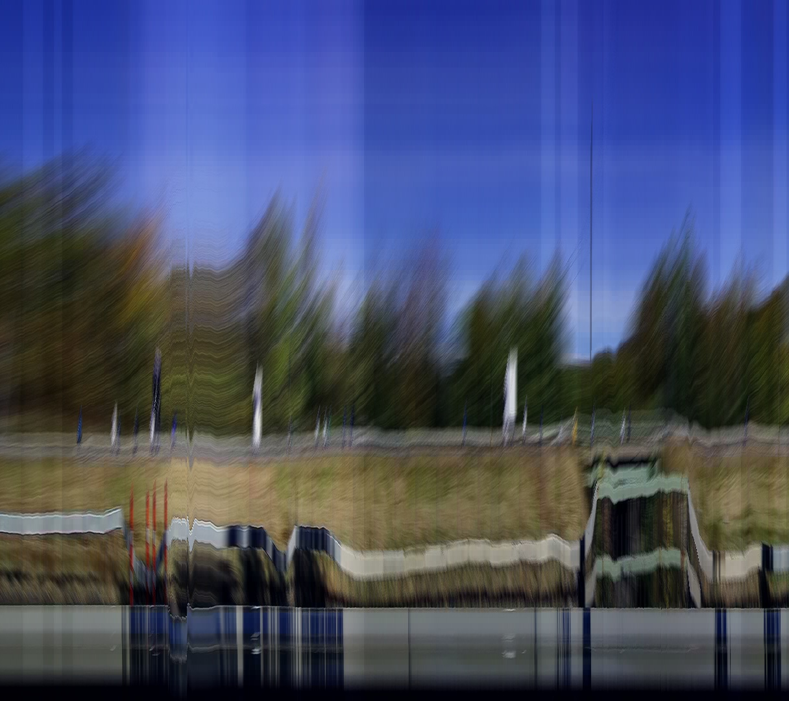
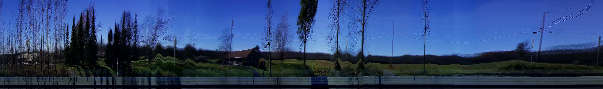
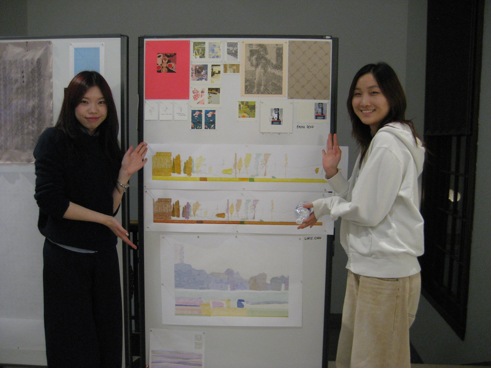
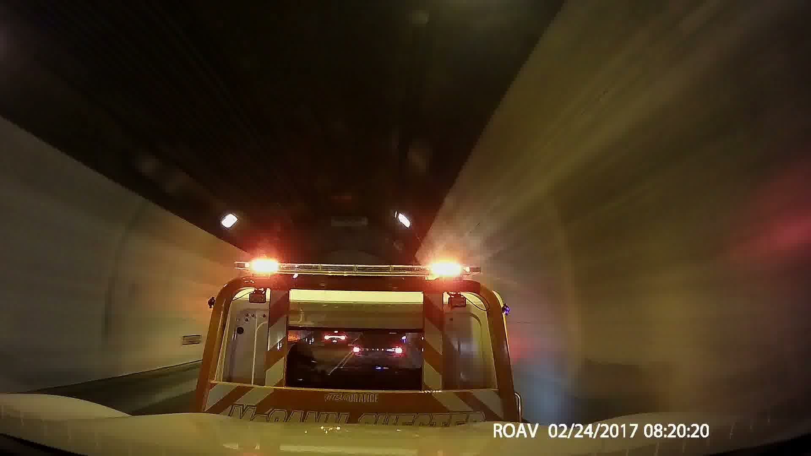

I drive a lot. This year I drove from Pittsburgh to the Midwest several times and left a dashcam running the whole way. The footage is hours of highway and weather and road texture — everything a car processes automatically and nobody watches.
The project is an ongoing series of experiments with what you can extract computationally. Slit scans collapse each frame to a single column and concatenate across time, turning three hours of interstate into a single image — weather, road surface, and motion compressed into a horizontal band. Text-prompted segmentation with SAM3 let me isolate "snow" after a February storm. Lens distortion correction via OpenCV chessboard calibration enabled 3D Gaussian splat reconstruction from the corrected frames using novel view synthesis.
The snow segmentation produced something unexpected: sneckdowns — the informal pedestrian desire paths visible in snow that show how people actually move through intersections, as opposed to how the street is designed. Ghosts of human existence in footage that wasn't looking for them.
- tools
- SAM2, SAM3, OpenCV, ffmpeg, Spark.js, On-the-Fly Novel View Synthesis (Inria)
- related work
- a dash cam is worth a 1,000,000 words
- links
- substack writeup →






